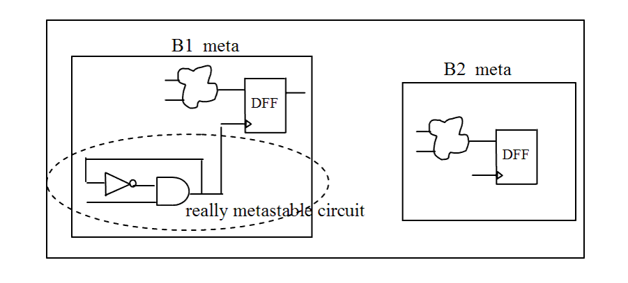

| Description | This rule fires when Leda detects circuits labeled with _meta that are not really metastable circuits. Metastable circuits are handled seriously in timing analysis and synthesis. You can configure this rule to specify the circuit label that Leda checks using the rule_set_parameter Tcl command and the NAME_SHOULD_BE_SYNCHRONIZER parameter. The default value is _meta. For example:
leda> rule_set_parameter -rule NTL_STR14 \
-parameter NAME_SHOULD_BE_SYNCHRONIZER \
-value {_sync}
|
| Policy | DESIGN |
| Ruleset | STRUCTURE |
| Language | VHDL/Verilog |
| Type | Hardware |
| Severity | Error |
This is an example of invalid Verilog code, followed by a circuit diagram that illustrates the problem:
module ntl_str14_top; ... B1_meta U0(net_01, Clock, net_21); // OK -- a real metastable circuit labeled _meta B2_metr U1(net_02, Clock, net_22); // NTL_STR14 fires - not a real metastable circuit, but labeled _meta ... endmodule module B1_meta (D1, Clk1, Q1); ... wire net_1, net_2; //internal wire not I0 (.Z(net_2), .A(net_1)); nad I1(.Z(net_1), .A(Clk1), .B(net_2)); //DFF -- flip-flop DFF I2 (.D(D1), .CP(net_1), .Q(Q1)); endmodule module B2_meta (D2, Clk2, Q2); ... //DFF -- flip-flop DFF I0 (.D(D2), .CP(Clk2), .Q(Q2)); endmodule